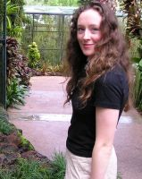

From a young age, Sinead has been fascinated by nature and the environment. She didn't know it at the time, but her pioneering mud pie creations were a sign of things to come. These early urban greening initiatives were a precursor for her interest in green roofs and green architecture. She has since obtained a degree in Agriculture from UCD, a H.Dip in Computer Science, CAD qualifications and completed the first year of a two year Masters in Landscape Architecture.
Her combination of horticultural expertise, gained with over five years experience in the garden center industry, IT skills and landscape architecture qualifications place her in a unique position to assess and advise on urban greening initiatives both technically and strategically. Her community development work with the Ballymun Regeneration Project gives her an understanding and insight to the real issues affecting communities with respect to sustainable living.
In addition to habitually rescuing bees in distress, Sinead also runs a successful landscape design business, winning a Silver medal in the inaugural Bloom 2007 flower show. She will be exhibiting a garden at the Bloom 2008 show and has set her sights on a Gold medal this time!
She is delighted to become part of the tepui team and is looking forward to the challenges ahead.